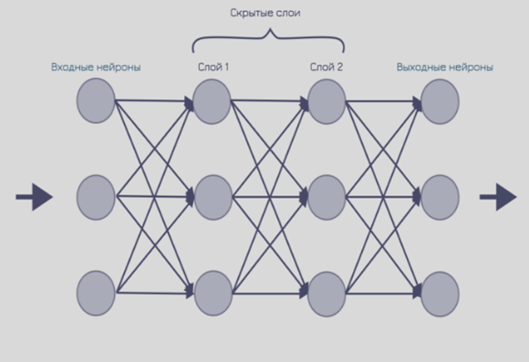

Нейронные сети — это один из ключевых инструментов машинного обучения, вдохновлённый структурой и работой человеческого мозга. Они состоят из взаимосвязанных узлов, называемых нейронами, которые организованы в слои: входной, один или несколько скрытых и выходной. Каждый нейрон получает числовые данные, обрабатывает их с помощью математических функций и передаёт результат дальше по сети. Благодаря способности к обучению на основе примеров, нейронные сети способны выявлять сложные закономерности в данных, классифицировать изображения, распознавать речь, переводить тексты и выполнять другие интеллектуальные задачи. При обучении сеть настраивает веса связей между нейронами таким образом, чтобы минимизировать ошибку в предсказаниях, что позволяет ей со временем улучшать свою точность. Современные архитектуры нейронных сетей, такие как сверточные, рекуррентные и трансформеры, применяются в самых разных областях — от медицины до финансов — и являются основой многих технологий, с которыми мы сталкиваемся каждый день, включая голосовых ассистентов, рекомендательные системы и автоматический перевод.
Промт (от англ. prompt) в контексте работы с нейронными сетями и языковыми моделями — это текстовый запрос или команда, которую пользователь вводит для получения ответа от модели. Промт играет роль стимула, запускающего процесс генерации или анализа, и от его формулировки напрямую зависит результат. Чем точнее, яснее и контекстуально богаче составлен промт, тем более полезный и релевантный ответ выдаст модель. В современных системах искусственного интеллекта, особенно в генеративных языковых моделях, промты используются не только для получения текстовых ответов, но и для управления стилем, структурой, уровнем сложности, форматом результата и даже для выполнения сложных действий, таких как написание кода, перевод, анализ данных или создание изображений. Искусство создания эффективных промтов, известное как промт-инжиниринг, становится важной практикой, поскольку позволяет добиваться от моделей более точных и контролируемых результатов.

На картинке вы увидели простейшую нейронную сеть, она состоит из нейронов и синопсов
Нейрон — это базовый вычислительный элемент, вдохновлённый работой биологических нейронов в мозге человека. Он получает входные данные, обрабатывает их с помощью математических операций и передаёт результат дальше по сети. Каждый нейрон имеет определённое количество входов, каждый из которых умножается на свой вес — числовой коэффициент, отражающий важность этого входа. Полученные значения суммируются и, как правило, проходят через функцию активации, которая определяет, будет ли нейрон активирован и какую выходную величину он передаст другим нейронам. Таким образом, нейрон работает как фильтр или преобразователь информации, участвуя в формировании сложного поведения всей сети. В совокупности большое количество связанных нейронов образует модель, способную обучаться на данных и решать задачи, такие как классификация изображений, распознавание речи, перевод текста и многое другое.
Синапс в искусственных нейронных сетях — это связь между двумя нейронами, через которую передается сигнал от одного нейрона к другому. Он выполняет роль канала передачи информации и характеризуется весом, который определяет силу и значимость этого сигнала. Вес синапса регулирует, насколько сильно выходное значение одного нейрона влияет на вход следующего. В процессе обучения нейронной сети значения весов синапсов изменяются, что позволяет сети адаптироваться и улучшать точность своих предсказаний. Таким образом, синапс играет ключевую роль в формировании и регулировании потоков информации внутри сети, обеспечивая способность нейросети к обучению и обобщению знаний.
Нейронные сети — это один из ключевых инструментов машинного обучения, вдохновлённый структурой и работой человеческого мозга. Они состоят из взаимосвязанных узлов, называемых нейронами, которые организованы в слои: входной, один или несколько скрытых и выходной. Каждый нейрон получает числовые данные, обрабатывает их с помощью математических функций и передаёт результат дальше по сети. Благодаря способности к обучению на основе примеров, нейронные сети способны выявлять сложные закономерности в данных, классифицировать изображения, распознавать речь, переводить тексты и выполнять другие интеллектуальные задачи. При обучении сеть настраивает веса связей между нейронами таким образом, чтобы минимизировать ошибку в предсказаниях, что позволяет ей со временем улучшать свою точность. Современные архитектуры нейронных сетей, такие как сверточные, рекуррентные и трансформеры, применяются в самых разных областях — от медицины до финансов — и являются основой многих технологий, с которыми мы сталкиваемся каждый день, включая голосовых ассистентов, рекомендательные системы и автоматический перевод.
Промт (от англ. prompt) в контексте работы с нейронными сетями и языковыми моделями — это текстовый запрос или команда, которую пользователь вводит для получения ответа от модели. Промт играет роль стимула, запускающего процесс генерации или анализа, и от его формулировки напрямую зависит результат. Чем точнее, яснее и контекстуально богаче составлен промт, тем более полезный и релевантный ответ выдаст модель. В современных системах искусственного интеллекта, особенно в генеративных языковых моделях, промты используются не только для получения текстовых ответов, но и для управления стилем, структурой, уровнем сложности, форматом результата и даже для выполнения сложных действий, таких как написание кода, перевод, анализ данных или создание изображений. Искусство создания эффективных промтов, известное как промт-инжиниринг, становится важной практикой, поскольку позволяет добиваться от моделей более точных и контролируемых результатов.
На картинке вы увидели простейшую нейронную сеть, она состоит из нейронов и синопсов
Нейрон — это базовый вычислительный элемент, вдохновлённый работой биологических нейронов в мозге человека. Он получает входные данные, обрабатывает их с помощью математических операций и передаёт результат дальше по сети. Каждый нейрон имеет определённое количество входов, каждый из которых умножается на свой вес — числовой коэффициент, отражающий важность этого входа. Полученные значения суммируются и, как правило, проходят через функцию активации, которая определяет, будет ли нейрон активирован и какую выходную величину он передаст другим нейронам. Таким образом, нейрон работает как фильтр или преобразователь информации, участвуя в формировании сложного поведения всей сети. В совокупности большое количество связанных нейронов образует модель, способную обучаться на данных и решать задачи, такие как классификация изображений, распознавание речи, перевод текста и многое другое.
Синапс в искусственных нейронных сетях — это связь между двумя нейронами, через которую передается сигнал от одного нейрона к другому. Он выполняет роль канала передачи информации и характеризуется весом, который определяет силу и значимость этого сигнала. Вес синапса регулирует, насколько сильно выходное значение одного нейрона влияет на вход следующего. В процессе обучения нейронной сети значения весов синапсов изменяются, что позволяет сети адаптироваться и улучшать точность своих предсказаний. Таким образом, синапс играет ключевую роль в формировании и регулировании потоков информации внутри сети, обеспечивая способность нейросети к обучению и обобщению знаний.
Бесплатные российские нейронные сети
Kandinsky (Сбер)
Генерация изображений по тексту, умное редактирование, создание анимаций и видео + объединение картинок.
GigaChat (Сбер)
Многофункциональный чат‑бот: генерирует текст, изображения, код, переводы, саммари и т.д. Бесплатно, поддерживает русский язык
Yandex GPT (Яндекс)
Языковая модель от Яндекса: генерация текстов, перевод, саммари прямо в браузере
RoboGPT
Нейросеть для создания контента для сайтов и социальных сетей. RoboGPT - нейросеть генератор уникального текста и картинок.
Gerwin
Ведущий российский сервис генеративного контента. Искусственный Интеллект для генерации текстов и изображений.